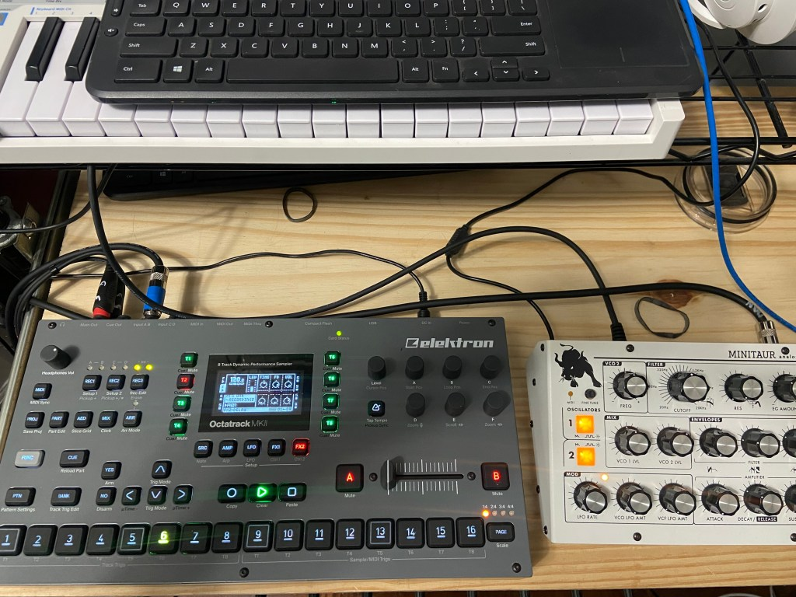

Octatrack forgetfulness
I was watching this video on Youtube and remembered that I have an Octatrack sitting here that I don’t use enough. https://www.youtube.com/watch?v=eqdczUpXy4c
He’s using the Polybrute 12 along with an Octatrack to make a beat.
I dug my Octatrack out and hooked it up. I had some random project loaded up that I forgot all about, that’s always fun. I created a new project (I always forget the project/set/part layout of these machines).
Scrolly scroll to create a name. Why do we use hardware again?

So the Octa doesn’t make any sounds of its own. It’s a recorder/sampler. I used my Minitaur to make some sounds.
Monitoring audio while you record requires going to the mixer panel and setting DIR for the input I’m using (A in this case, which would be AB in the mixer, they are handled as stereo pairs not separate mono).
Once I got that working I remembered the difference between a thru track and a flex track. If there is ever a question, the answer is flex unless there is some special circumstance.
I couldn’t hear anything. Wait, the track has to be in play mode. The Octa is the kind of sitting there making no sound while the user twiddles things making it do something. I still love this thing though.
Ok power features. Separate cue output, not many boxes have that. The crossfader is a secret weapon for scenes. Oh and good scene support. That’s a bonus too.
Recording. Each recorder is separate from the track. That’s a weird thing that takes some getting used to. Trigs. So many trig types.
Also nothing plays after you record unless there is a trig to trigger it. I always forget that part too.
Ok now I have some bloopy noises playing. Add drums and call it a track. Oh and there are slices and slots and all sorts of complicated things because each track is monophonic. It reminds me of the tracker days of yore.